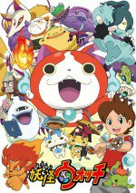

欢迎使用Bangumi管理收视进度
在一天的忙碌过后终于闲下来看动画，却忘记之前看到了哪里？只需要在动画或三次元条目的收藏盒收藏动画，Bangumi 就可以开始为你管理你的动画收视。以下是你可能感兴趣的番组：

妖怪ウォッチ
小组话题
热门条目讨论
每日放送
KOWOINEKO 将 mizudiwood 加为了好友
看了一下bangumi上的声之形评论，想不到大家对这部作品的抱怨这么大。 总觉得抱怨的不是地方，强行强行洗白。
Coverbil 想看 スロウスタート
离群客 看过 ep.10 タイフーン襲来 少女たちは荒野を目指す
文学少女的⑨ 发表了新日志：【剧透】Nega0时间线整理
缘离飞翼 发表了新日志：反抗的意志中诞生出的自由
离群客 想玩 Crusader Kings 2
DarkNexus 将 ふうふう 加为了好友